WE ARE HERE :D
ABOUT
Mhow, officially known as Dr Ambedkar Nagar,is a cantonment in the Indore District in Madhya Pradesh state of India. It is located 23 kilometres (14 mi) south of Indore city towards Mumbai on the Mumbai-Agra Road. The town was renamed as Dr Ambedkar Nagar in 2003, by the Government of Madhya Pradesh.
This cantonment town was founded in 1818 by John Malcolm as a result of the Treaty of Mandsaur between the English and the Holkars who were the Maratha Maharajas of Indore. John Malcolm's forces had defeated the Holkars of the Maratha Confederacy at the Battle of Mahidpur in 1818. It was after this battle that the capital of the Holkars shifted from the town of Maheshwar on the banks of the Narmada to Indore.
Mhow used to be the headquarters of the 5th (Mhow) Division of the Southern Command during the British Raj. Today this small town is associated with the Indian Army and with Bharat Ratna Dr. B. R. Ambedkar an economist, philosopher, jurist, anthropologist, Buddhist activist, a revolutionary, a prolific writer and a political leader who was born here.
Mhow was a meter gauge railway district headquarters during the British Raj and even after 1947.The irony is that Mhow finally has a broad gauge connection with Indore but regular train services are yet to commence.
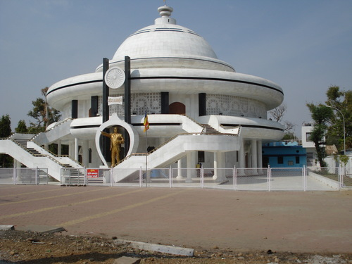
 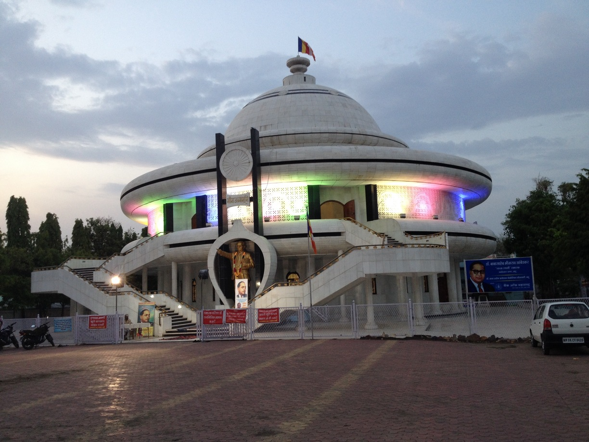
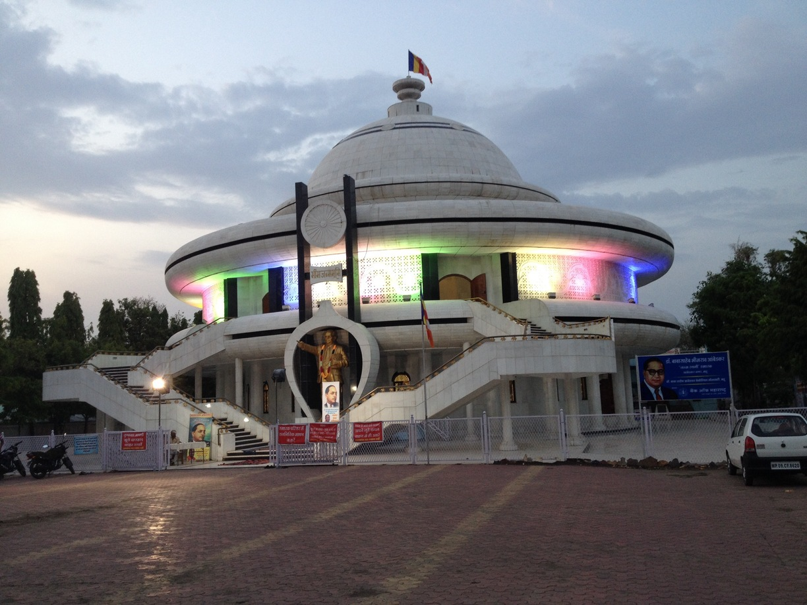
 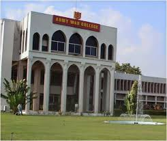
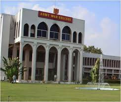
.jpg) 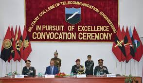
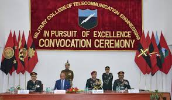
CANTONMENT
As early as 1818, the Indian Army has had a presence in Mhow. Up until World War II, Mhow was the headquarters of the 5th Division of the Southern Army. According to local legend, Winston Churchill also spent a few months in Mhow when he was a subaltern serving with his regiment in India. The house on the mall where he is supposed to have lived, gradually crumbled due to neglect and age. It was pulled down and a jogger's park has been built on its grounds by the Infantry School.
Mhow houses three premier training institutions of the Indian Army; The Infantry School, The Military College of Telecommunication Engineering (MCTE) and The Army War College.
In addition to these institutes, Mhow is where Army Training Command or ARTRAC was born. ARTRAC was based in Mhow from 1991 to 1994, before it shifted to Shimla (Himachal Pradesh). At that time its General Officer Commanding in Chief (GOC-in-C) was Lt. General Shankar Roy Chowdhary who went on to become the Chief of Army Staff (COAS). Its first GOC-in-C was Lt. General A.S. Kalkat who had earlier commanded the Indian Peace Keeping Force (IPKF) in Sri Lanka. ARTRAC was housed in the campus of the present Army School. This was used as All Arms Wing of MCTE for many decades. It was originally built and used as the British Military Hospital (BMH).

.jpg) 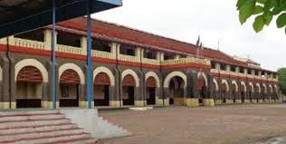
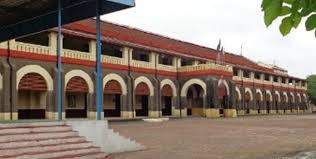
.jpg)
POLITICAL SCENARIO
Mhow has one seat in the State Legislative Assembly (the Vidhan Sabha). The first elected MLA (Member of Legislative Assembly) was the late Mr. R.C. Jall (Indian National Congress) who belonged to the Parsi community.
Since 2008, the MLA from Mhow is Mr. Kailash Vijayvargiya of the BJP who is also the Urban Administration Minister in the cabinet of Chief Minister Shivraj Singh Chouhan. Previous MLA: Antar Singh Darbar of the Indian National Congress.
Until 2009, Mhow Tehsil was part of the Indore Lok Sabha constituency. Under the delimitation exercise carried out all over the nation, Mhow is now in the Dhar Parliamentary constituency though it continues to be in Indore district for administrative purposes. Present Member of Parliament for Mhow is the Dhar MP Mrs Savitri Thakur of the BJP.
Mhow (and e rest of MP) went to the polls on Monday 25 Nov 2013. Mhow recorded what could well be its highest ever turnout in a Vidhan Sabha election - 78.11%. Total number of voters 220553. As per Mhow Control Room: Men constitute 79.34% and Women 76.76% with Overall - 78.11%.
On 8 Dec 2013 Mr. Kailash Vijayvargiya was declared the winner from Mhow Vidhan Sabha constituency.
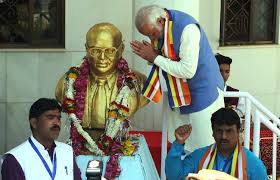
.jpg) 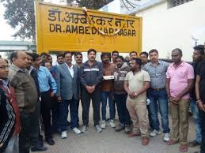
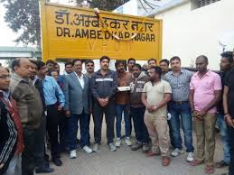
MILITARY COLLEGE TELECOMMUNICATION ENGINEERING
The first training institution in Mhow, MCTE was known as the School of Signals till 1967. It is the alma mater of the Corps of Signals. MCTE conducts telecommunications and information technology courses for officers, JCOS, NCOs and soldiers of the Indian Army. Officers and men from other countries also attend courses there. It also trains gentlemen cadets for a bachelor's degree in engineering at the Cadets Training Wing (CTW). On completion of their training, most of the cadets get commissioned into the Indian Army's Corps of Signals, however, some are also commissioned into other branches.

ARMY WAR COLLEGE
Army War College, Mhow (AWC) is a tactical training and research institution of the Indian Army. It develops and evaluates concepts and doctrines for tactics and logistics. The college trains about 1,200 officers, as well as paramilitary forces each year.
The college was originally established as the College of Combat at Mhow on April 1, 1971. It was spun out of the Infantry School, Mhow. It continued to operate from the campus of the Infantry School until 1988, when the college moved to its new campus. In 2003, the college was renamed as the Army War College, Mhow.
The College mainly conducts three courses—the Junior Command (JC) course, the Senior Command (SC) course and the Higher Command (HC) course. The former Chiefs of Army Staff (COAS) General K. Sundarji and General V. N. Sharma have served as the Commandant of the College. The present commandant is Lt Gen Rajeev Tewari, PVSM, AVSM.
INFANTRY SCHOOL
The Infantry School is a training establishment of the Indian Army. It is responsible for the training of officers and infantry. The Commando Wing of this school is in Belgaum, Karnataka. The Army Marksmanship Unit (AMU) is a part of the Infantry School and has produced many medal winning shooters. Field Marshal Sam Manekshaw was the first Indian Commandant of this school in 1955-56 when he was a Brigadier.
.jpg)
.jpg)
.jpg)
TOURISM
Tourist spots in and around Mhow include:
- Patalpaani Waterfall
-
Mehndikund Waterfall
-
Choral Dam
-
Mandu Forte
-
Wanchoo Point
-
Janapav Hill
-
Choral River
-
Jaam Gate
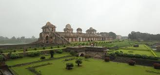
.jpg) 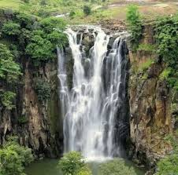
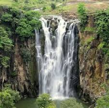